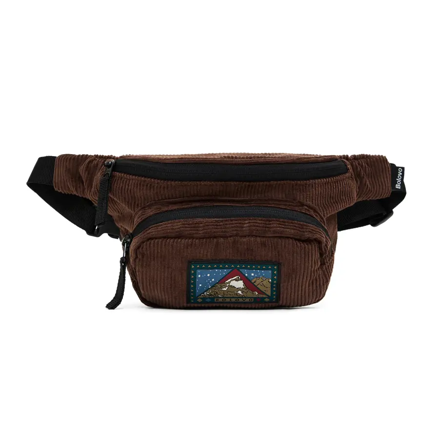

A pochete é uma peça pequena, de custo acessível e com boa área frontal para a marca. Atende moda de rua, esporte e brinde corporativo com variações do mesmo molde. Para quem está lançando marca própria, costuma ser uma boa porta de entrada. Veja os modelos, os materiais, as opções de personalização e em que situações ela vale a pena.
Por que a pochete é versátil
Com ajustes de tamanho, tecido e aviamentos, o mesmo tipo de peça serve a públicos diferentes: streetwear, corrida, viagem e brinde. Por ser compacta, consome menos tecido que uma mochila ou uma bolsa grande, o que reduz o investimento no primeiro lote. E a aba frontal é uma área bem visível para o logo.
O esporte ajuda a explicar o interesse. A pesquisa Por Dentro do Corre, da Olympikus com a consultoria Box1824, estimou cerca de 15 milhões de corredores no Brasil em 2025, com mais jovens e mais mulheres entre os praticantes (fonte 1). A pochete de corrida, que leva celular e chave junto ao corpo, conversa diretamente com esse público.
Pochete, shoulder bag ou crossbody: qual a diferença
Os nomes se misturam, mas há diferenças práticas:
- Pochete: em inglês, fanny pack ou waist bag. Compacta, usada na cintura ou cruzada no peito;
- Shoulder bag: um pouco maior, usada transversal no ombro, com mais espaço interno;
- Crossbody: termo geral para bolsas usadas cruzadas no corpo, que inclui as duas anteriores.
Para uma marca nova, a pochete é a entrada de menor custo, e a shoulder bag agrega capacidade e preço. Muitas marcas lançam as duas juntas para cobrir os dois usos. Veja mais modelos de rua no guia de bolsas streetwear.
Modelos e tamanhos que mais pedimos
- Slim: fina, só para o essencial (celular, cartão, chave). Combina com marcas de moda e com corrida;
- Média com bolso frontal: a mais versátil, para uso diário e brinde;
- Utilitária: vários compartimentos, fivelas e cordão elástico, com visual de rua;
- De corrida: leve, justa ao corpo, com elástico ou fita regulável que não balança.
O formato certo depende do público. Definir isso antes da piloto ajuda a acertar a modelagem e o preço final. As faixas de medida e os materiais estão na página de pochetes personalizadas.
Materiais
Os tecidos que mais usamos em pochete:
- Nylon: leve e resistente. Com revestimento, segura respingos e chuva fraca;
- Poliéster: boa variedade de cores e aceita sublimação;
- Lona de algodão: visual encorpado, com pegada mais clássica;
- Sarja: toque macio e boa base para bordado;
- Cordura e tecidos técnicos: para linhas utilitárias e de uso intenso.
O tecido define o toque e o preço. Para comparar com critério, veja o guia de tipos de tecido.
Aviamentos que fazem diferença
Na pochete, os detalhes ficam evidentes porque a peça é pequena. Pela nossa experiência de produção, o zíper é o item que mais gera reclamação quando é fraco, então vale investir nele. Fivela de engate rápido resistente, alça regulável com boa amplitude e um puxador personalizado completam a peça. São custos pequenos por unidade que mudam a percepção de quem compra ou recebe.
Personalização
O bordado dá acabamento mais durável na aba frontal. O silk resolve logos coloridos em volume. A sublimação permite estampa total em pochete de poliéster claro. Etiqueta tecida e puxador com o nome da marca reforçam a identidade sem ocupar a frente. A escolha muda o custo; entenda em bordado, silk ou sublimação.
Quando a pochete vale a pena
- Primeiro lançamento de marca: investimento inicial menor para testar o público, a partir de 20 peças por modelo e cor;
- Brinde para público jovem e esportivo: eventos, lançamentos e provas de corrida;
- Mix de coleção: item de entrada ao lado de bolsas e mochilas maiores;
- Uniforme de equipe: staff de eventos, que precisa das mãos livres.
Como brinde, a pochete tem a vantagem de ser usada fora de casa, onde a marca aparece. No estudo de consumo de 2016 da PPAI, 83% dos entrevistados lembraram sem ajuda de pelo menos uma marca presente em brindes que receberam (fonte 2).
Como funciona o pedido
Você envia uma referência (foto ou peça) e o briefing, que é o resumo do que precisa: público, medidas aproximadas, tecido, cores e logo. Não é preciso desenho técnico. A peça-piloto fica pronta em até 15 dias e, depois da sua aprovação, o lote é produzido em até 25 dias úteis. O desenvolvimento custa em média R$ 600, variando conforme o modelo.
Quer começar sua linha com pochete? Veja como funciona o private label (produção com a sua marca), conheça os modelos no catálogo e saiba como fabricamos pochetes personalizadas no atacado.
Perguntas frequentes
Qual o pedido mínimo de pochete personalizada?
A partir de 20 unidades por modelo e cor, com peça-piloto aprovada antes do lote.
Qual a diferença entre pochete e shoulder bag?
A pochete é menor e usada na cintura ou cruzada no peito. A shoulder bag é maior, usada transversal no ombro, com mais espaço interno.
Qual material é melhor para pochete?
Nylon para leveza e resistência, poliéster para cores e sublimação, lona ou sarja para visual mais encorpado e cordura para linhas utilitárias. Definimos junto conforme o estilo da marca.
Quanto tempo leva para produzir pochetes personalizadas?
A peça-piloto fica pronta em até 15 dias. Depois da aprovação, o lote é produzido em até 25 dias úteis.
Preciso de desenho técnico para fazer minha pochete?
Não. Uma foto de referência e um briefing com público, medidas aproximadas, tecido e logo são suficientes para desenvolver a peça-piloto.
Fontes
- Pesquisa da Olympikus aponta mais mulheres, jovens e classe C na corrida de rua, Propmark, 2026.
- PPAI’s 2016 Consumer Study Reinforces The Influence, Clout And Muscle Of Promotional Products, PPAI (Promotional Products Association International), 2016.
Pronto para produzir com a LS Confecções?
Fabricação B2B de bolsas, mochilas e acessórios personalizados a partir de 20 unidades, em São Paulo. Fale direto com nosso comercial e receba uma proposta em minutos.
Solicitar orçamento